Tenri, Nara: things to do, food and stays
Tenri · Nara
Tenri
Highlighted on the Nara map.
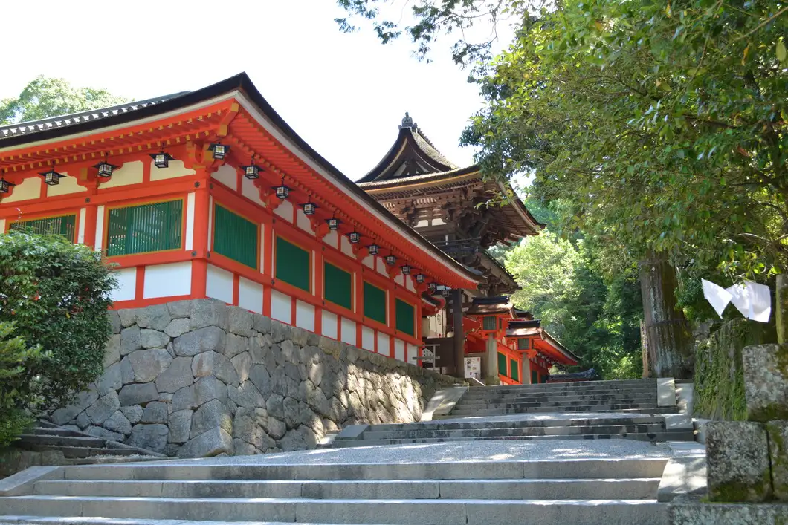
Stay
和蔵 天然温泉「睡蓮の湯」 グランヴィリオホテル奈良和蔵 -ルートインホテルズ-
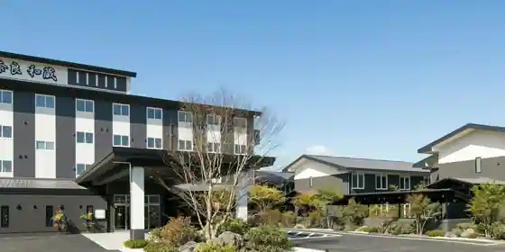
Wazo Tennen Onsen (Suiren No Yu) Guranvirio Hotel Nara Wazo - Route Inn Hotels
Hotel in Nikaidouenosho, Tenri with a large communal bath.
フェアフィールド･バイ･マリオット･奈良天理山の辺の道
Feafirudo Feafirudo Bai Bai Mariotto Mariotto Nara Tenri Yama No Hen No Michi
cofunia
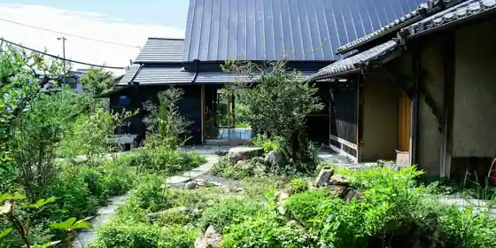
cofunia
ビジネスホテル喜楽荘
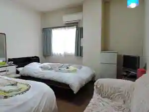
Business Hotel Kiraku So
Inn in Kawarashiro, Tenri with business travelers; 8-minute walk from Tenri Station.
東横ＩＮＮ天理駅前
Toyoko INN Tenri Ekimae
Inn in Kawarashiro, Tenri; 1-minute walk from Nganewopun!Tenri Station.
ビジネス旅館やまべ
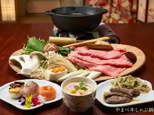
Business Ryokan Yamabe
Ryokan inn in Tabe, Tenri with business travelers; 3-minute walk from (Tenri Station.
フェアフィールド・バイ・マリオット・奈良天理山の辺の道
Feafirudo Bai Mariotto Nara Tenri Yama No Hen No Michi
ceueu（セウエウ）櫟本駅
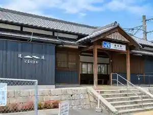
ceueu(Seueu) Ichinomoto Eki
Inn at Jinko Onsen in Ichinomoto, Tenri with one group per day and pet-friendly rooms.
グランヴィリオホテル奈良 和蔵 ―ルートインホテルズ―
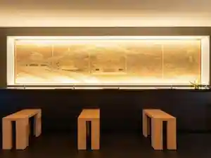
Guranvirio Hotel Nara Wazo Rote Inn Hotels
奈良健康ランド・奈良プラザホテル
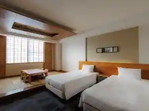
Nara Kenko Rando Nara Plaza Hotel
Hotel at Karadawoiyasutennen Onsen in Kabata, Tenri with parking and a sauna.
Dining
麺食堂 88
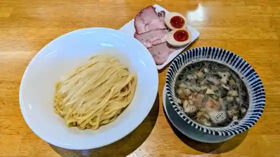
Men Shokudo 88
洋食勝井
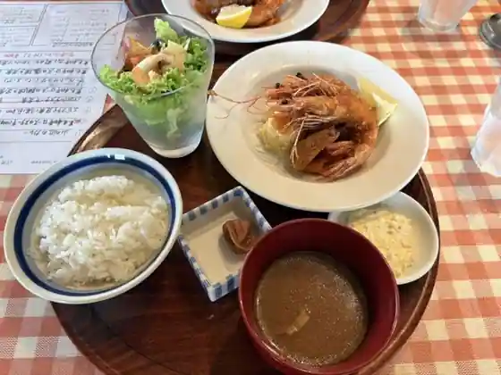
Yoshoku Katsui
らぁ麺 せんいち
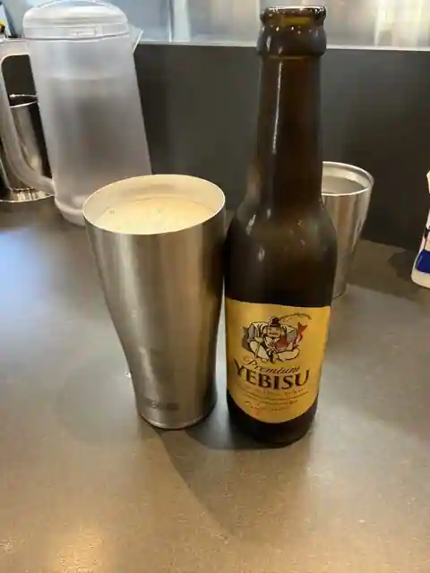
Ra Men Sen'Ichi
麺場 力皇
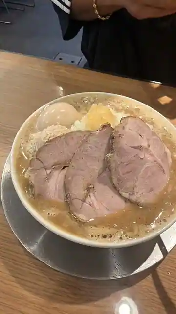
Men Ba Chikara Ko
麺屋 一徳
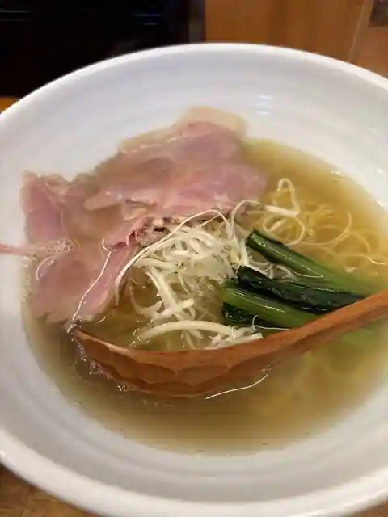
Men Ya Motonori
IEKEI KANSAI 王道家直系 我道家
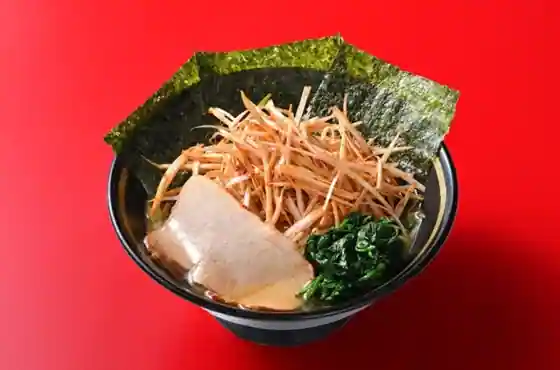
IEKEI KANSAI Odo Ie Chokkei Ware Doka
すぎ乃 天理店
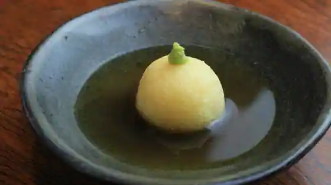
Sugi No Tenri
豚菜館
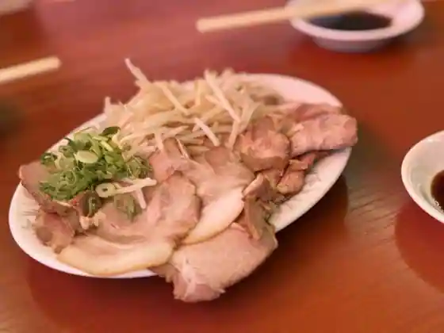
Buta Saikan
中西ピーナッツ
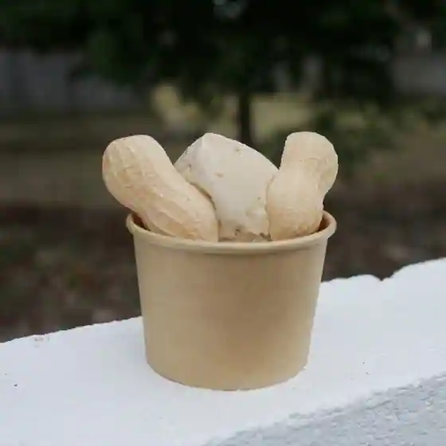
Nakanishi Pinattsu
塩たいおう
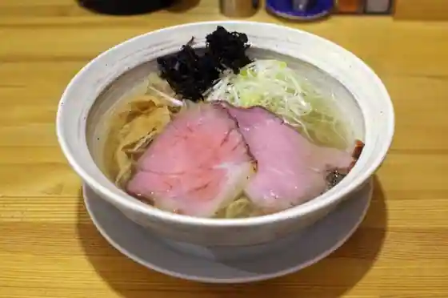
Shio Taio
肉匠迎賓館 天理店
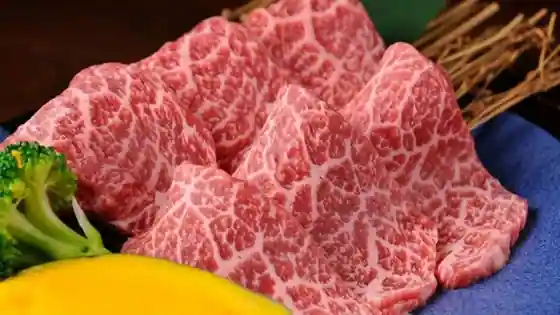
Niku Takumi Geihinkan Tenri
みしまや
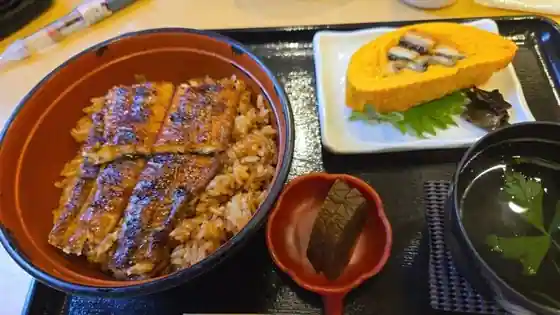
Mishimaya
麺〜seeness〜なかの 本店
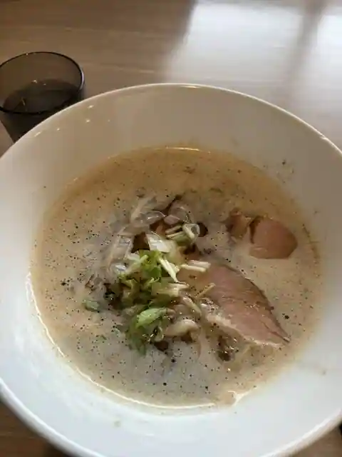
Men ~ seeness ~ Nakano Hon
ラーメン軍団 歴史を刻め 天理街道店
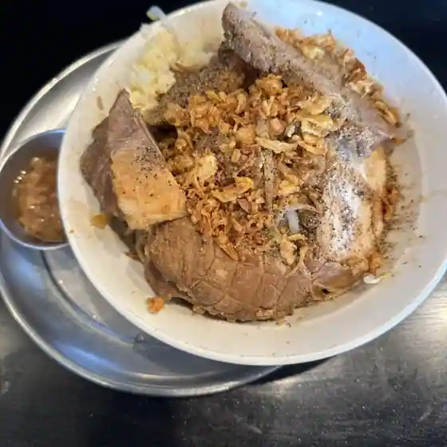
Ramen Gundan Rekishi Wo Kizame Tenri Kaido
彩華ラーメン 本店
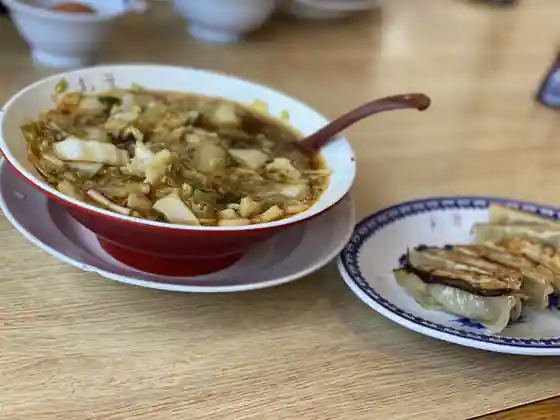
Ayaka Ramen Hon
さかえ食堂
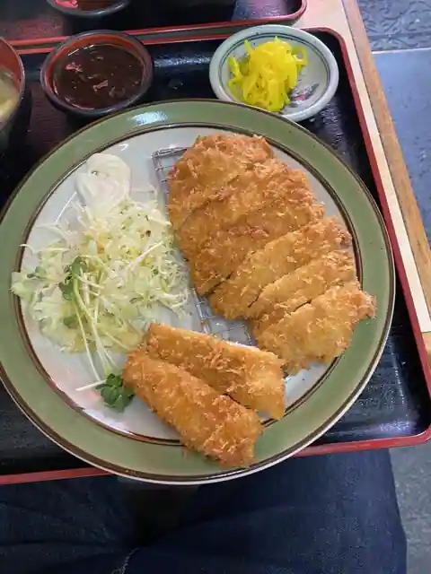
Sakae Shokudo
大和軒 本店
Yamato Ken Hon
かおく
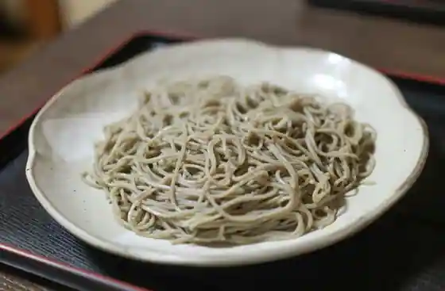
Kaoku
つけ麺いちびり 天理店
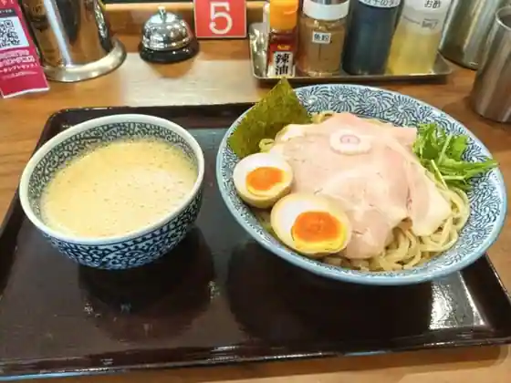
Tsuke Men Ichibiri Tenri
御陵餅本舗
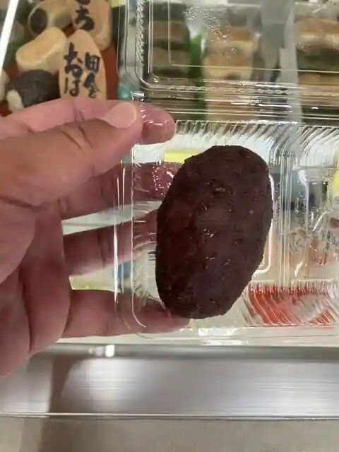
Goryo Mochi Honpo
OTO
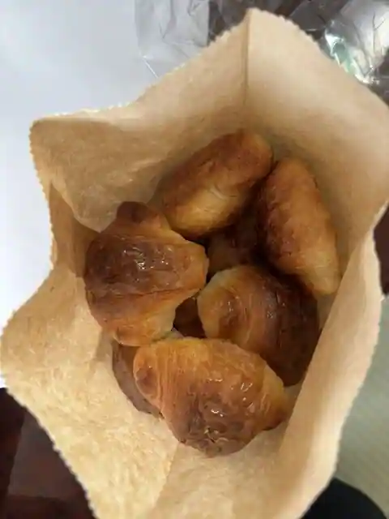
OTO
東来軒
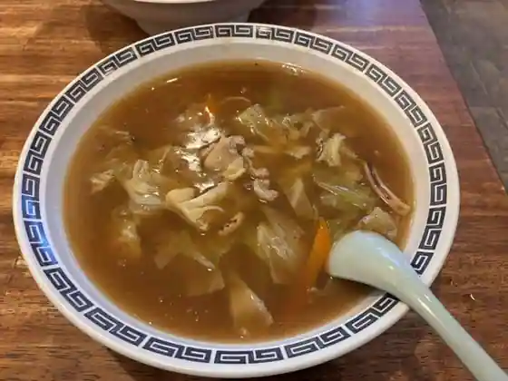
Higashi Rai Ken
天理スタミナラーメン 本店
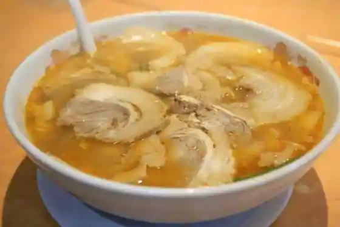
Tenri Sutamina Ramen Hon
ル レーヴ
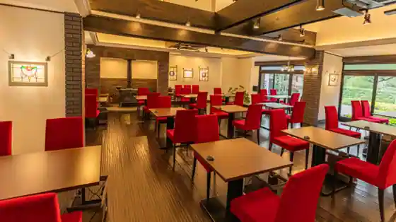
Ru Revu
Sights
Ishigami Shrine
Chogaku Tera
Yamato Shrine
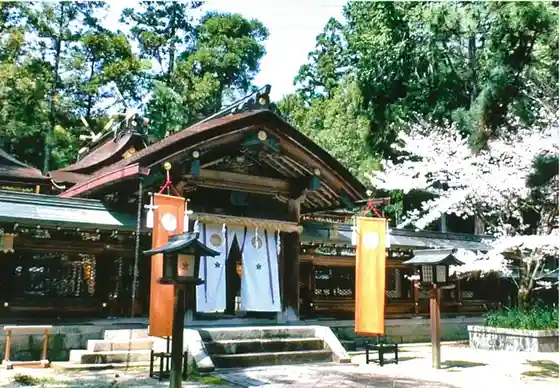
Tenri Daigaku Fuzoku Tenri Sanko Kan
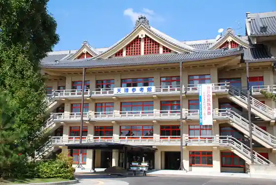
Tenri Toreiru Center
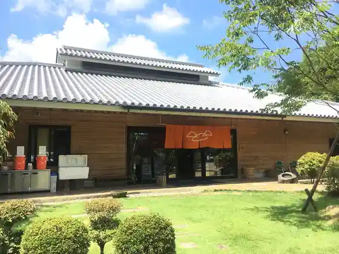
Nara Rekishi Geijutsu Bunka Village
Uchiyama Eikyu Jiseki
Momo O Falls
Yamabe Michi Ko Okagami Ryo (Sujin Tenno Ryo)
Kuro Tsuka Burial Mound
Yamabe Dojo Ryo (Kageyuki Tenno Ryo)
Sanju Hachi Shrine
Shapu Museum (Tenri)
Tenri Tourist Farm
Fusuma Ta Ryo